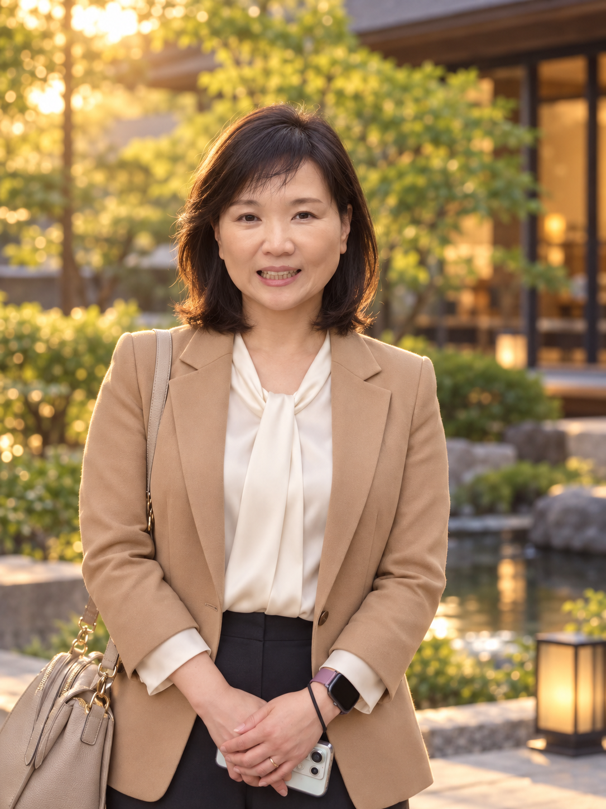
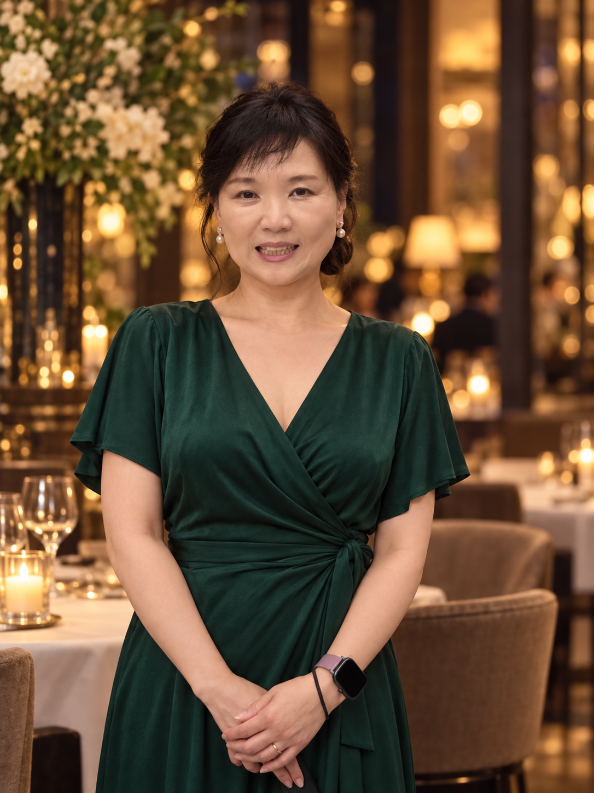
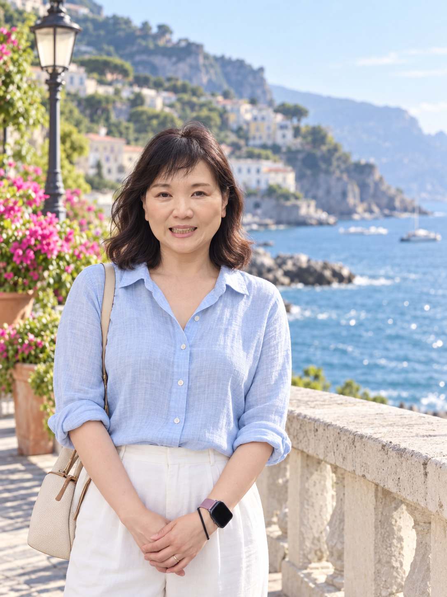
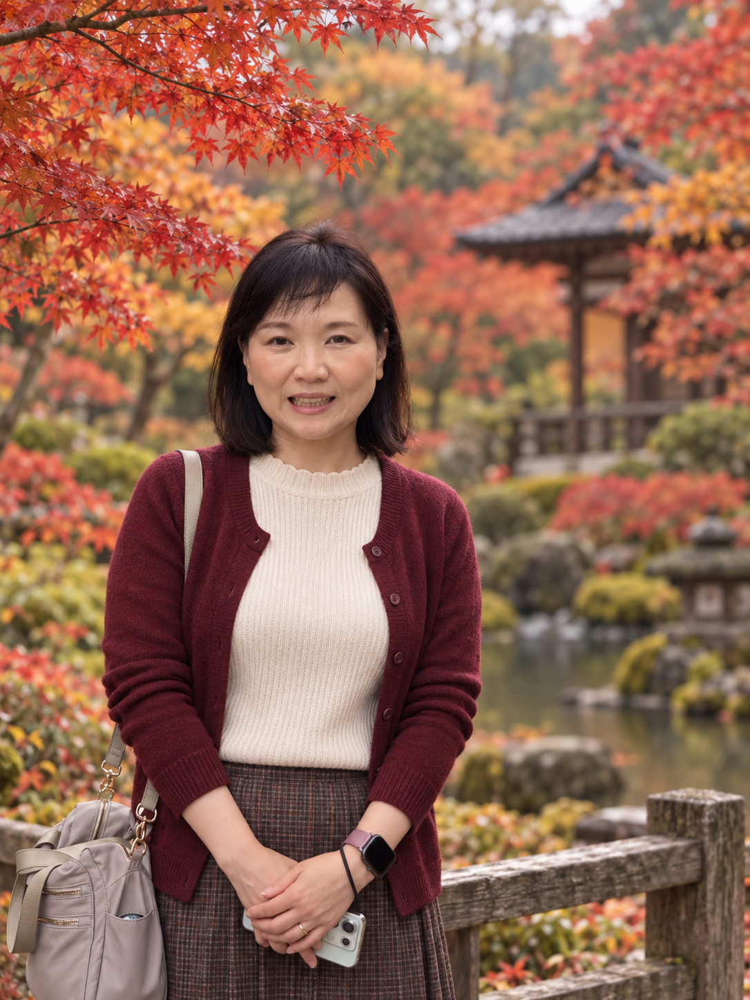
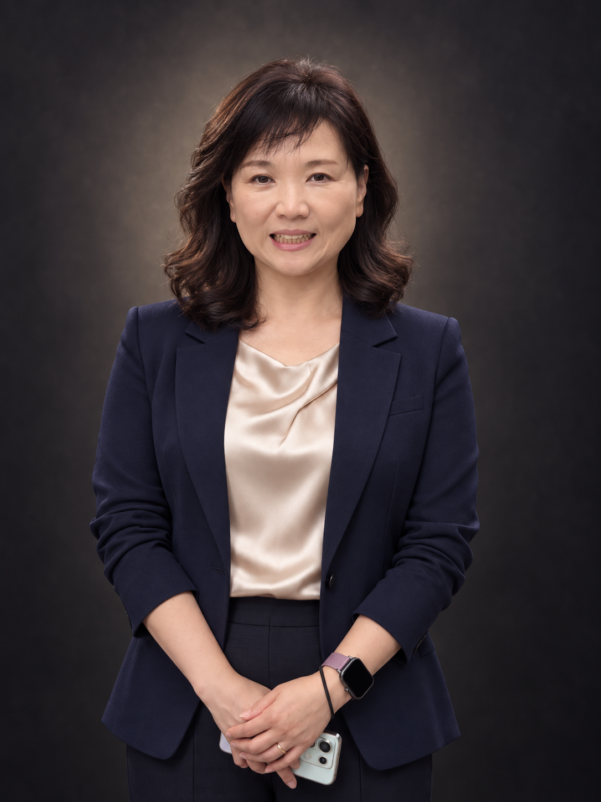
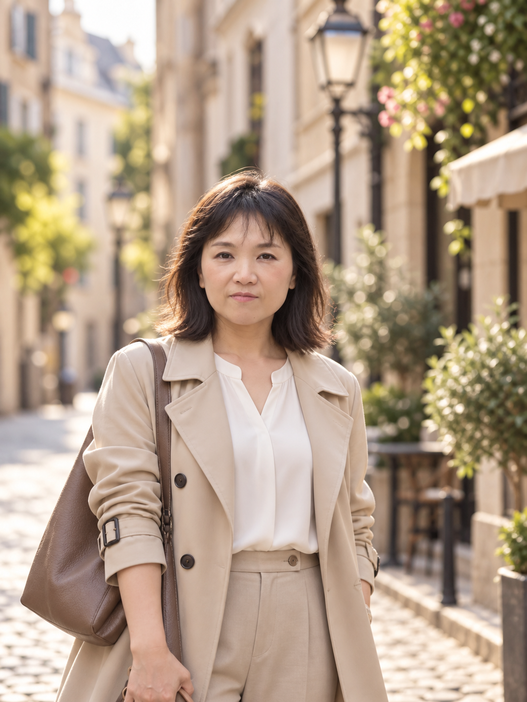
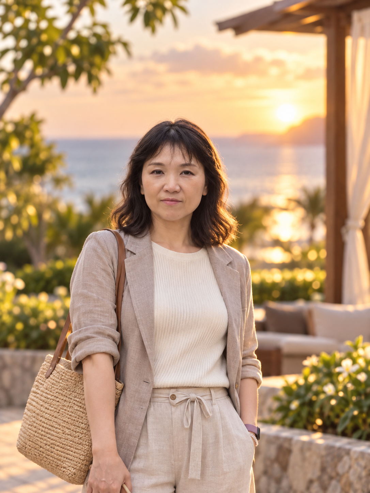
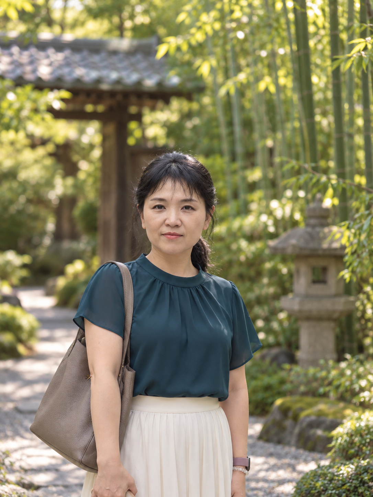
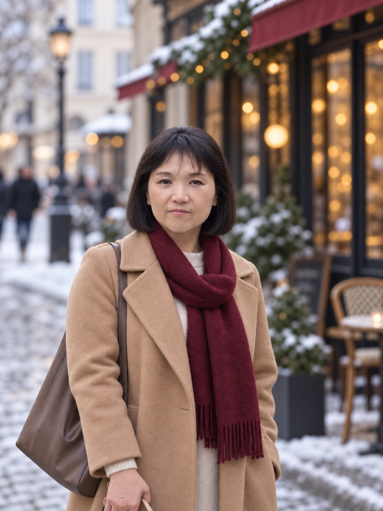
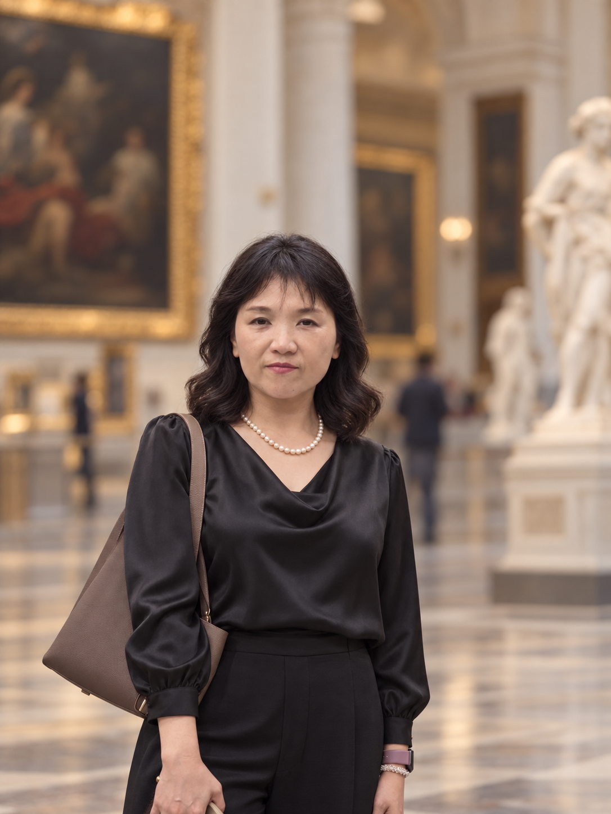

Pattern 01
Soft Modern
レイヤーボブとローズ系メイク。アイボリーのブラウスとキャメルのジャケットで、柔らかく上品に。
5 style directions
Hair · Makeup · Wardrobe · Background

レイヤーボブとローズ系メイク。アイボリーのブラウスとキャメルのジャケットで、柔らかく上品に。

低めのシニヨンと深いグリーンのラップドレス。暖かなレストランの灯りで、華やかな夜の印象。

軽やかなウェーブとブルーのリネン。海辺の朝の光を活かした、爽やかな旅先ポートレート。

肩上のダークボブとボルドーのカーディガン。紅葉の庭を背景に、落ち着いた季節感。

サイドパートの柔らかなカールとネイビージャケット。スタジオ照明で端正な印象に。

サイドスイープのレイヤーボブ、ベージュのトレンチ。街中の朝の光で洗練された印象に。

自然なウェーブとアイボリーのニット。夕暮れのリゾートで柔らかく華やかに。

低めのポニーテールと深いティールのブラウス。竹林の木漏れ日で落ち着いた雰囲気。

あごラインのボブとキャメルコート。冬のカフェストリートを背景に上品な装い。

柔らかなカールとパール。美術館の空間を活かした、端正なエディトリアルポートレート。
元写真の顔立ち・表情・ポーズを保ちながら、10の方向性を比較できるようにしています。画像をクリックすると拡大表示できます（ブラウザ標準機能）。